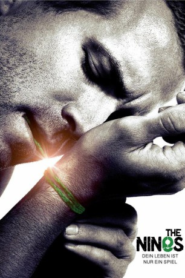
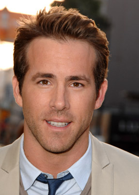
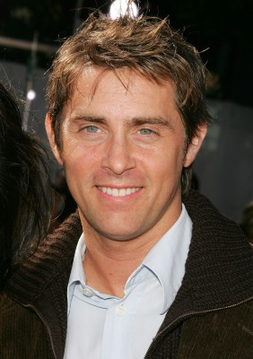

#9851 The Nines - Dein Leben ist nur ein Spiel
Alternativ: The Nines
 
 IMDB-Wertung: 6.4 / 10
IMDB-Wertung: 6.4 / 10  Metascore: 52
Metascore: 52 
Gary, ein runtergekommener TV-Star, wird mit seiner Publizistin Margaret im Haus eines Autors einquartiert, nachdem er sein eigenes Heim volltrunken niedergebrannt hat. Doch merkwürdige Dinge spielen sich in dem Haus ab: Gary hört fremde Geräusche, er findet Notizen, die er geschrieben haben muss, an die er sich aber nicht erinnert, in der Küche trifft er scheinbar auf sich selbst und eine Zahl scheint ihn die ganze Zeit zu verfolgen: 9!
Jahr: 2007
Dauer: 99 Minuten
FSK: 12
Land: USA Studio: Newmarket FilmsTonspuren: DTS - ,
Untertitel: Deutsch,
Auflösung: 1080p (1920x1040) Größe: 7137 MB
Genre: Thriller, Drama, Sci-Fi, Fantasy, Mystery
Regisseur: John August
Drehbuch: John August
Soundtrack: Alex Wurman
Darsteller:
-  Ryan Reynolds als Gary / Gavin Taylor / Gabriel
 Melissa McCarthy als Margaret / Melissa McCarthy / Mary
Melissa McCarthy als Margaret / Melissa McCarthy / Mary Hope Davis als Sarah / Susan Howard / Sierra
Hope Davis als Sarah / Susan Howard / Sierra Elle Fanning als Noelle
Elle Fanning als Noelle David Denman als Parole Officer / Agitated Man
David Denman als Parole Officer / Agitated Man Octavia Spencer als Streetwalker / Pedestrian
Octavia Spencer als Streetwalker / Pedestrian Ben Falcone als Ben Falcone
Ben Falcone als Ben Falcone- Dahlia Salem als Dahlia Salem
-  John Gatins als John Gatins
- Greg Baine als Delivery Guy
- Gregg Naaman als Focus Group Participant #2
- Lorene Scafaria als Game Night Guest
- Jim Rash als Game Night Guest
 Rawson Marshall Thurber als Game Night Guest
Rawson Marshall Thurber als Game Night Guest- Dan Jinks als Game Night Guest
- Sean Andrews als Officer Cooper (uncredited)
- Howard A. Rodman als Himself (uncredited)
- Ellen Treanor als Christine Walsh (uncredited)
- Andy Fielder als Andy Fielder
- Jodi Sellards als Piano Player
- Martin Yu als Focus Group Participant #1
- Nicholas Garren als Russian Drug Dealer (uncredited)
- Malia Herrick als Check-in girl (uncredited)
- Ben Knight als Focus Group Participant #3 (uncredited)
Datei: X:\2007(N-Z)\Nines - Dein Leben ist nur ein Spiel, The (2007, FSK12, 1920x1040).mkv seit 02.11.2018
Festplatte: HD 2007(A-Z)-2008(A-F)
 Es gibt insgesamt 56 Filme in der Gruppe '2007(N-Z)'
Es gibt insgesamt 56 Filme in der Gruppe '2007(N-Z)'